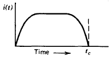
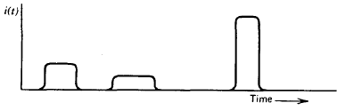
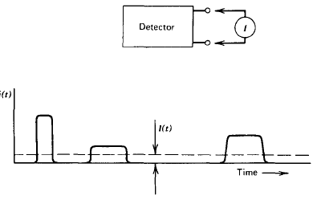
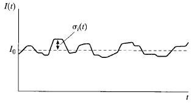
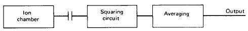

The net result of the radiation interaction in a wide category of detectors is the appearance of a given amount of electric charge within the detector active volume. Our simplified detector model thus assumes that a charge \(Q\) appears within the detector at time \(t = 0\) resulting from the interaction of a single particle or quantum of radiation. Next, this charge must be collected to form the basic electrical signal. Typically, collection of the charge is accomplished through the imposition of an electric field within the detector, which causes the positive and negative charges created by the radiation to flow in opposite directions. The time required to fully collect the charge varies greatly from one detector to another. For example, in ion chambers the collection time can be as long as a few milliseconds, whereas in semiconductor diode detectors the time is a few nanoseconds. These times reflect both the mobility of the charge carriers within the detector active volume and the average distance that must be traveled before arrival at the collection electrodes.
We therefore begin with a model of a prototypical detector whose response to a single particle or quantum of radiation will be a current that flows for a time equal to the charge collection time. The sketch below illustrates one example for the time dependence the detector current might assume, where \(t_c\) represents the charge collection time.
|  | \[\int_0^{t_c}i(t)dt = Q\] |
In any real situation, many quanta of radiation will interact over a period of time. If the irradiation rate is high, situations can arise in which current is flowing in the detector from more than one interaction at a given time. For purposes of the present discussion, we assume that the rate is low enough so that each individual interaction gives rise to a current that is distinguishable from all others. The magnitude and duration of each current pulse may vary depending on the type of interaction, and a sketch of the instantaneous current flowing in the detector might then appear as shown in the sketch below.

It is important to recall that, because the arrival of radiation quanta is a random phenomenon governed by Poisson statistics, the time intervals between successive current pulses are also randomly distributed.In pulse mode operation, the measurement instrumentation is designed to record each individual quantum of radiation that interacts in the detector. In most common applications, the time integral of each burst of current, or the total charge \(Q\), is recorded since the energy deposited in the detector is directly related to \(Q\). All detectors used to measure the energy of individual radiation quanta must be operated in pulse mode. Such applications are categorized as radiation spectroscopy and are the subject of much of the remainder of this text.
In other circumstances, a simpler approach may suit the needs of the measurement: All pulses above a low-level threshold are registered from the detector, regardless of the value of \(Q\). This approach is often called pulse counting, and we will show various examples later in this text. It can be useful in many applications in which only the intensity of the radiation is of interest, rather than sensing any changes in or information about the incident energy distribution of the radiation.
At very high event rates, pulse mode operation becomes impractical or even impossible. The time between adjacent events may become too short to carry out an adequate analysis, or the current pulses from successive events may overlap in time. In such cases, one can revert to alternative measurement techniques that respond to the time average taken over many individual events. This approach leads to the remaining two modes of operation: current mode and MSV mode.

If we assume that the measuring device has a fixed response time \(T\), then the recorded signal from a sequence of events will be a time-dependent current given by \[ I(t) = \frac{1}{T}\int_{t - T}^t i(t')dt' \tag{4.1} \] Because the response time \(T\) is typically long compared with the average time between individual current pulses from the detector, the effect is to average out many of the fluctuations in the intervals between individual radiation interactions and to record an average current that depends on the product of the interaction rate and the charge per interaction. In current mode, this time average of the individual current bursts serves as the basic signal that is recorded.
At any instant of time, however, there is a statistical uncertainty in this signal due to the random fluctuations in the arrival time of the event. In many ways, the integration time \(T\) is analogous to the measurement time discussed in the statistical analysis of the previous chapter. Thus, the choice of large \(T\) will minimize statistical fluctuations in the signal but will also slow the response to rapid changes in the rate or nature of the radiation interactions.
The average current is given by the product of the average event rate and the charge produced per event. \[ I_0 = rQ = r\frac{E}{W}q \tag{4.2} \] where \begin{eqnarray} r &=& {\rm event \, rate}\\ Q &=& Eq/W = {\rm charge \, produced \, for \, each \, event}\\ E &=& {\rm average \, energy \, deposited \, per \, event}\\ W &=& {\rm average \, energy \, required \, to \, produce \, a \, unit \, charge \, pair (e.g., electron\text{-}ion \, pair)}\\ q &=& 1.6 \times 10^{-19}C \end{eqnarray}
For steady-state irradiation of the detector, this average current can also be rewritten as the sum of a constant current \(I\). plus a time-dependent fluctuating component \(\sigma_i(t)\), as sketched below.

Here \(\sigma_i(t)\) is a random time-dependent variable that occurs as a consequence of the random nature of the radiation events interacting within the detector.A statistical measure of this random component is the variance or mean square value, defined as the time average of the square of the difference between the fluctuating current \(I(t)\) and the average current \(I_0\). This mean square value is given by \[ \overline{\sigma_I^2(t)} = \frac{1}{T}\int_{t - T}^t[I(t') - I_0]^2 dt' = \frac{1}{T}\sigma_i^2(t')dt' \tag{4.3} \] and the standard deviation follows as \[ \overline{\sigma_I(t)} = \sqrt{\overline{\sigma_I^2(t)}} \tag{4.4} \]
Recall from Poisson statistics that the standard deviation in the number of recorded events \(n\) over a given observation period is expected to be \[ \sigma_n = \sqrt{n} \tag{4.5} \] Therefore, the standard deviation in the number of events occurring at a rate \(r\) in an effective measurement time \(T\) is simply \[ \sigma_n = \sqrt{rT} \tag{4.6} \] If each pulse contributes the same charge, the fractional standard deviation in the measured signal due to random fluctuations in pulse arrival time is given by \[ \frac{\overline{\sigma_i(t)}}{I_0} = \frac{\sigma_n}{n} = \frac{1}{\sqrt{rT}} \tag{4.7} \]
It should be noted that, in the derivation of Eq. (4.7), the charge produced in each event (\(Q\)) is assumed to be constant. Therefore, the result accounts for only the random fluctuations in pulse arrival time, but not for fluctuations in pulse amplitude. In some applications, however, this second source of variance in the signal is small in comparison with the first, and the general character of the results given remains applicable.

The result corresponds to the quantity \(\overline{\sigma_I^2(t)}\) defined previously in Eq. (4.3). Combining Eqs. (4.2) and (4.7), we predict the magnitude of the signal derived in this way to be \[ \overline{\sigma_I^2(t)} = \frac{rQ^2}{T} \tag{4.8} \] We see that this mean square signal is directly proportional to the event rate \(r\) and, more significantly, proportional to the square of the charge \(Q\) produced in each event. An analysis of this mode of operation was first given by Campbell and the term Campbelling mode is therefore substituted for MSV mode in some usage.The MSV mode of operation is most useful when making measurements in mixed radiation environments when the charge produced by one type of radiation is much different than that from the second type. If simple current mode operation is chosen, the measured current will linearly reflect the charges contributed by each type. In MSV mode, however, the derived signal is proportional to the square of the charge per event. This operational mode will therefore further weight the detector response in favor of the type of radiation giving the larger average charge per event. As one example of the useful application of the MSV mode, in Chapter 14 we describe its use with neutron detectors in reactor instrumentation to enhance the neutron signal compared with the response due to smaller-amplitude gamma-ray events.